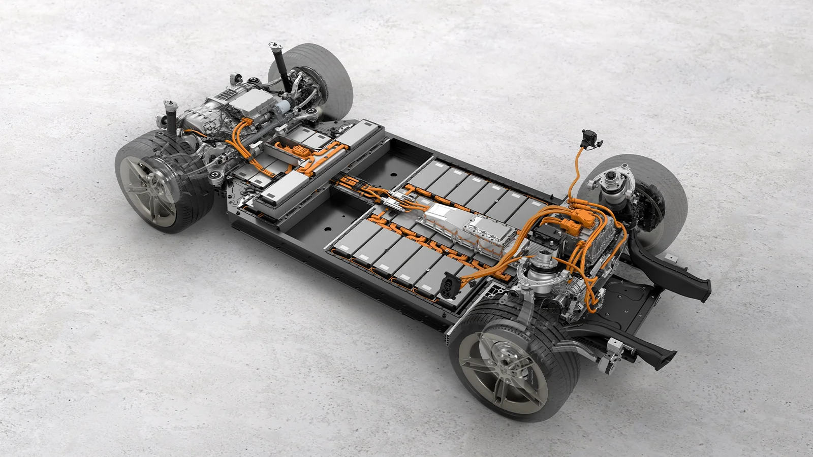

El corazón de la definición radica en el uso de motores eléctricos. Estos motores convierten la energía eléctrica directamente en energía mecánica rotacional que impulsa las ruedas. A diferencia de un motor de combustión, que genera movimiento a través de explosiones controladas de combustible, el motor eléctrico funciona mediante principios de electromagnetismo.
La energía eléctrica necesaria para alimentar el motor se almacena en un conjunto de baterías, predominantemente de iones de litio en la actualidad, debido a su alta densidad energética y capacidad de ciclos de carga/descarga. Estas baterías son el componente más pesado y costoso del vehículo, y su capacidad (medida en kilovatios-hora, kWh) determina la autonomía del vehículo.
A diferencia de los híbridos que pueden recargar sus baterías con el motor de combustión o frenado, los autos eléctricos puros dependen fundamentalmente de la recarga desde una fuente de electricidad externa. Esto puede hacerse en casa (utilizando un enchufe doméstico o un cargador de pared dedicado), en el trabajo, o en estaciones de carga públicas. La velocidad de carga varía significativamente según el tipo de cargador (CA lenta, CA rápida, CC ultrarrápida).
Una de las características definitorias y la principal ventaja ambiental de los autos eléctricos es que no producen emisiones de gases de escape en el punto de uso. Al no quemar combustible, no liberan dióxido de carbono (CO2), óxidos de nitrógeno (NOx) partículas u otros contaminantes directamente a la atmósfera. Esto los convierte en una pieza clave para mejorar la calidad del aire urbano y combatir el cambio climático (si la electricidad que los carga proviene de fuentes renovables).
Los autos eléctricos se definen también por su menor complejidad mecánica. Un motor eléctrico tiene significativamente menos piezas móviles que un motor de combustión, lo que se traduce en menos puntos de falla, menor necesidad de mantenimiento y, en general, una mayor fiabilidad. Además, los motores eléctricos son inherentemente más eficientes en la conversión de energía (superando el 80-90%) en comparación con los motores de combustión (que rara vez superan el 30-40% de eficiencia energética neta).
La definición también se extiende a la experiencia que ofrecen. Se caracterizan por una aceleración instantánea y un funcionamiento excepcionalmente silencioso. El par motor máximo está disponible desde 0 RPM, lo que proporciona una sensación de respuesta inmediata y potente, sin los cambios de marcha ni las vibraciones asociadas a los motores de combustión.